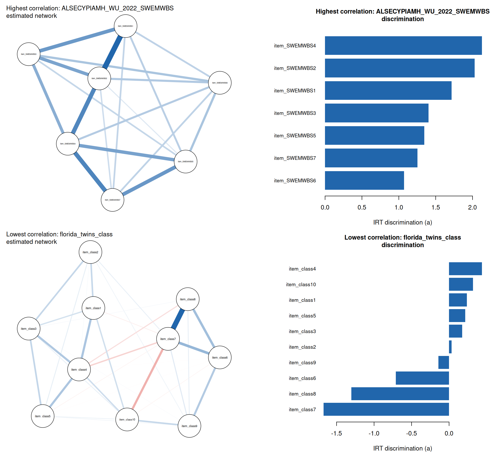

Network Psychometrics vs. IRT: Does Centrality Track Discrimination?
IRT explains why items correlate with a single latent trait; network psychometrics explains it with a graph of direct partial-correlation edges between items, no latent variable required. Under a strong single common cause, the two should agree: a network’s node centrality should track IRT discrimination, and the network should look densely and uniformly connected. We test this across real IRW instruments and check whether the relationship tracks tables already flagged as multidimensional or locally dependent elsewhere on this site.
Published
July 22, 2026
Note
This vignette — including the dataset search, the compute script, the analysis design, and the writing below — was produced largely by Claude (Anthropic), working from a task specification and with human review. Treat the methodological choices and interpretations accordingly, and check the compute script (network_psych_compute.R) directly if you’re relying on the numbers here.
Motivation
Every other vignette on this site treats item covariation the same way IRT does: responses correlate because they all depend, more or less, on one latent trait. Network psychometrics proposes a different account. Instead of a shared cause behind the correlations, it models items as nodes in a graph and estimates direct, partial-correlation edges between them — an Ising model for binary items, a Gaussian graphical model (EBICglasso) for polytomous ones. No latent variable is fit at all; the graph is the model.
These two accounts aren’t just philosophically different — they make a shared, testable prediction. Van der Maas et al. (2006) (Maas et al. 2006) and Epskamp, Maris, van Borkulo, & Borsboom (2018) (Epskamp et al. 2018) show that if a single dominant common cause really does explain a set of items, the two descriptions should coincide. This isn’t just an informal observation: Marsman et al. (2018) (Marsman et al. 2018) prove a formal statistical equivalence between the Ising model and the 2PL for binary items, and Marsman, van den Bergh, & Haslbeck (2025) (Marsman et al. 2025) extend that equivalence to ordinal items – with a wrinkle noted in Data and methods below. Under that equivalence, a node’s centrality (how strongly and directly it connects to every other node) should track that item’s IRT discrimination, and the estimated network should look densely and fairly uniformly connected — not clustered into visibly separate sub-groups. This vignette tests that prediction across real IRW instruments, and asks whether it holds up better or worse for tables this site’s other diagnostics already flag as multidimensional (dimensionality vignette) or locally dependent (local-dependence vignette).
Items are capped at 30 (lower than the dimensionality vignette’s 40) and polytomous tables are restricted to 3-7 response categories, mainly for compute reasons: EBIC-regularized network estimation scales worse than a single IRT fit or eigen-decomposition. 660 tables met this criterion as of July 2026 (125 binary, 535 polytomous). This pass analyzes all 660 of them.
Per-table computation
For each candidate table, fit_network():
Fetches the table and builds a wide response matrix, downsampling to at most 10,000 respondents and dropping zero-variance items, mirroring the other IRT vignettes on this site.
Estimates a regularized network with bootnet::estimateNetwork(): IsingFit for binary items, EBICglasso for polytomous items. The polytomous correlations are computed via qgraph::cor_auto() (corMethod = "cor_auto", corArgs = list(forcePD = TRUE)), which estimates polychoric correlations for ordinal data and projects to the nearest valid correlation matrix when the polychoric estimate isn’t positive-definite — this still treats the graph estimation step as Gaussian, an approximation relative to an exact ordinal network model, but does not additionally treat Likert categories as literally continuous integers (see Limitations for why both of those still fall short of the ordinal Markov random field with a proven IRT equivalence).
Computes node centrality with qgraph::centrality_auto(). In a genuinely weighted network this returns a Strength column (each item’s summed edge weight); a fully empty regularized network — every edge shrunk to zero — gets auto-detected as unweighted and falls back to Degree instead. That’s still a real, informative result (kept in the data below), just not one with a meaningful strength-discrimination correlation, so that comparison is left NA for those tables.
Fits a one-factor IRT model and extracts item discrimination: 2PL for binary items; the generalized partial credit model (GPCM), not the graded response model used elsewhere on this site, for polytomous items — GPCM is the model with a proven equivalence to the ordinal network model this vignette’s polytomous branch estimates (see Limitations).
Records the correlation between node strength and discrimination across items — the vignette’s core comparison — plus network density (proportion of possible edges present) and construct_type/ item_format from IRW’s tags.
Joins in, where the same table appears: the eigenvalue ratio / parallel-analysis outcome from the dimensionality vignette’s cache, and the proportion of Q3-flagged pairs from the local-dependence vignette’s cache — read directly from their saved results rather than recomputed.
Code
fit_network <-function(table_name) { resp <-fetch_wide(table_name) # irw_fetch() + irw_long2resp(), cleaned net <-if (n_categories ==2) {estimateNetwork(resp, default ="IsingFit") } else {estimateNetwork(resp, default ="EBICglasso", corMethod ="cor_auto") } cent <-centrality_auto(net$graph) fit <-mirt(resp, 1, itemtype =if (n_categories ==2) "2PL"else"gpcm") a <-coef(fit, simplify =TRUE)$items[, "a1"]cor(cent$node.centrality$Strength, a) # the core comparison}
Of the 660 candidate tables in this pass, 609 produced usable results (the rest were dropped for too few usable items, an unsupported column type on fetch, a network/IRT model that failed to fit, or too few remaining response categories). This pass matched a dimensionality-vignette entry for 581 of those tables and a local-dependence-vignette entry for 572 — both caches were built on an overlapping but not identical candidate pool, so coverage is high but not total.
Note
To reproduce with current IRW holdings, re-run network_psych_compute.R (after the dimensionality and local-dependence compute scripts, which it depends on) and commit the updated network_psych_data/network_psych_results.rds.
Results
Two concrete examples, opposite ends of the relationship
Code
example_candidates <- summary_df %>%filter(!is.na(strength_a_cor), network_density >0) %>%rowwise() %>%# Exclude numerically degenerate IRT fits -- e.g. a near-duplicate item# pair can drive discrimination to an implausible boundary value (a ~ 50),# which makes for a misleading rather than illustrative example.mutate(max_abs_a =max(abs(discriminations_list[[table]]), na.rm =TRUE)) %>%ungroup() %>%filter(max_abs_a <5)hi_table <- example_candidates %>%slice_max(strength_a_cor, n =1, with_ties =FALSE) %>%pull(table)lo_table <- example_candidates %>%slice_min(strength_a_cor, n =1, with_ties =FALSE) %>%pull(table)hi_cor <- summary_df$strength_a_cor[summary_df$table == hi_table]lo_cor <- summary_df$strength_a_cor[summary_df$table == lo_table]plot_example_pair <-function(table_name, label) { g <- graphs_list[[table_name]] s <- strengths_list[[table_name]] a <- discriminations_list[[table_name]]par(mar =c(4, 1, 4, 1)) qgraph::qgraph(g, layout ="spring", labels =names(s),label.cex =0.9, vsize =11, posCol = irw_blue, negCol = irw_red,title =paste0(label, ": ", table_name, "\nestimated network"),title.cex =1)par(mar =c(4, 10, 4, 2)) ord <-order(a)barplot(a[ord], names.arg =names(a)[ord], horiz =TRUE, las =1,cex.names =0.8, col = irw_blue, border =NA,xlab ="IRT discrimination (a)",main =paste0(label, ": ", table_name, "\ndiscrimination"), cex.main =1)}par(mfrow =c(2, 2))plot_example_pair(hi_table, "Highest correlation")plot_example_pair(lo_table, "Lowest correlation")

Figure 1: Estimated network (left) and IRT discrimination parameters (right) for the table with the strongest strength-discrimination correlation in this sample (top) and the weakest (bottom). Edge color shows sign: blue = positive partial correlation, red = negative. Top: a dense, uniformly-connected, uniformly positive graph with node positions that roughly track item discrimination – exactly what Epskamp et al.’s theory predicts under a strong single factor. Bottom: edge thickness and node position barely track discrimination at all, and every edge is negative.
ALSECYPIAMH_WU_2022_SWEMWBS has a strength-discrimination correlation of 1 — about as clean a confirmation of the theory as this sample produces. florida_twins_class sits at the opposite end, at -0.7: the two descriptions of the same items agree much less about which ones matter most, to the point of actively disagreeing about direction.
What makes the contrast worth dwelling on is what doesn’t differ much between them: both networks are comparably dense (density 0.95 and 0.76 respectively). Density and uniformity, the other half of Epskamp et al.’s prediction, don’t distinguish these two cases well; only the strength-discrimination correlation reveals that one table matches the single-common-cause story and the other doesn’t. A network that merely looks dense and uniform is not, on its own, evidence that IRT and network psychometrics agree about the items — this pair is a direct counterexample.
The disagreement in florida_twins_class isn’t subtle, either: 4 of its 10 items get a negative IRT discrimination, meaning the graded response model estimates them as running opposite the trait it fit from the rest. The network still connects those items to every other about as strongly as any pair in hi_table, despite the sign disagreement in the IRT fit. Practically, that matters most for anyone using either statistic to pick or drop items — shortening a scale by discrimination, or by network centrality, is not a neutral choice, and a table like this one is exactly where the two selections would part ways. Compare both examples to the aggregate picture below: most tables fall somewhere between these two extremes, but not always close to the middle.
NoteA worked case for why a single common cause can fail, not just that it does
One table worth a specific look regardless of where it happens to fall in the ranking above – its strength-discrimination correlation this pass is 0.09 – is clifford_2018_police_blame. Each item asks the identically-worded “how much blame does X deserve” about a different target in the 2018 Sacramento police shooting of Stephon Clark – state officials and the responding officers on one side, and the victim himself (item_blame_clark) on the other. Blaming the victim is a substantively different judgment from blaming officials, and the raw item correlations bear that out: item_blame_clark correlates negatively with every other item (fetched directly from IRW, not shown here), while the official-blame items mostly correlate positively with each other. That’s a real bipolar attitude structure, not a data-entry or reverse-coding artifact – there’s no oppositely-worded item to un-reverse; every item shares the same “how much blame” wording, only the target changes. It’s a reminder that a low (or negative) strength-discrimination correlation doesn’t always mean the same thing: sometimes it’s a genuinely multidimensional or bipolar construct like this one, and sometimes – as with the current lowest-correlation example above – the network and the IRT model simply weight the same roughly-unidimensional items differently.
Does strength track discrimination in general?
Code
ranked_df <- summary_df %>%filter(!is.na(strength_a_cor)) %>%arrange(strength_a_cor) %>%mutate(rank =row_number(),tooltip =paste0("Table: ", table,"<br>Strength-a correlation: ", round(strength_a_cor, 2),"<br>Network method: ", network_method,"<br>Network density: ", round(network_density, 2),"<br>n_items: ", n_items ) )p <-ggplot(ranked_df, aes(x = strength_a_cor, y = rank, text = tooltip)) +geom_point(colour = irw_blue, size =1.6, alpha =0.7) +geom_vline(xintercept =0, linetype ="dashed", colour = irw_grey) +labs(x ="Correlation: node strength vs. IRT discrimination",y ="Rank (spreads points out only -- carries no meaning of its own)") +theme(axis.text.y =element_blank(), axis.ticks.y =element_blank())ggplotly(p, tooltip ="text") |>layout(margin =list(t =60))
Figure 2: Correlation between network node strength and IRT discrimination, one point per table. The y-axis carries no information of its own – it is each table’s rank by that correlation (low to high), used only to spread overlapping points out vertically so individual tables are separable; read the plot along the x-axis only. Values near 1 match the theoretical prediction under a strong single factor; low or negative values indicate a breakdown. Hover over a point to see which table it is.
The median strength-discrimination correlation across 602 tables with a usable comparison is 0.68, and 48% of tables exceed 0.7. 7 table(s) are excluded here because their regularized network had no edges at all – an empty network, not a low correlation. The relationship is real and often strong, but — as the two comparisons below make concrete — it is not universal.
Cross-vignette payoff 1: does it track the dimensionality diagnostic?
Figure 3: Strength-discrimination correlation against the dimensionality vignette’s eigenvalue ratio (log scale, capped at 15 for display). If Epskamp et al.’s theory holds, the correlation should sit near 1 for tables with a high (clearly unidimensional) ratio and scatter lower as the ratio approaches the vignette’s ratio = 4 heuristic cutoff or below. Hover for table details.
Across the 575 tables with a match in both this vignette and the dimensionality vignette, the two diagnostics move together weakly but reliably (r = 0.26 between strength-discrimination correlation and log eigenvalue ratio) — real signal in the direction the theory predicts, not a tight relationship. The theory’s prediction shows up more clearly when split by the dimensionality vignette’s own parallel-analysis call: the 14 tables it flags as unidimensional have a median strength-discrimination correlation of 0.95, versus 0.69 for the 561 tables it flags as multidimensional (Wilcoxon p < 0.001). Parallel analysis is strict — only a small fraction of tables clear its bar for “unidimensional” — but among the ones that do, network centrality and IRT discrimination agree noticeably better.
Cross-vignette payoff 2: do locally dependent tables look denser?
Figure 4: Network density against the local-dependence vignette’s proportion of Q3-flagged item pairs. A testlet or shared-stimulus effect should show up as extra edges concentrated among the affected items – more flagged pairs, denser estimated networks – rather than the theory’s predicted uniform density. Hover for table details.
Across the 572 tables with a match in both this vignette and the local-dependence vignette, network density and the proportion of Q3-flagged pairs correlate at r = 0.42 (p < 0.001) — the expected sign (more flagged pairs, denser network), and with 572 tables behind it, a reliable one. Density alone doesn’t distinguish a uniformly dense network from one with a few tightly-connected clusters sitting inside an otherwise sparse graph — the latter is the more specific testlet signature, and it’s exactly what the local-dependence vignette’s Q3 heatmaps are built to catch directly. Detecting that cluster structure from the network side properly needs community-detection tools this pass didn’t run at batch scale (see Limitations); density is the coarser proxy available here.
Practical implications
Where the strength-discrimination correlation is high and the network is dense and uniform, network psychometrics and IRT are, practically speaking, telling the same story about the same items — using either framework to identify the “best” items should agree. Where it breaks down, that’s a signal worth taking seriously in its own right, independent of which framework you prefer: it means the two ways of describing item covariation actually disagree about which items matter most, and a table flagged as multidimensional or locally dependent elsewhere on this site is a reasonable place to expect exactly that disagreement.
Limitations
EBICglasso on ordinal data, two gaps found and one fixed by refitting.bootnet::estimateNetwork()’s EBICglasso preset does not call qgraph::cor_auto() by default — as of bootnet 1.4, the EBICglasso default set switched from corMethod = "cor_auto" to plain Pearson correlations (cor). Neither bootnet nor qgraph was pinned in renv.lock at the time (now fixed — see below), so an earlier pass of this vignette likely ran on whatever version was on the machine at the time and may have silently treated 7-point Likert integers as literally continuous. This pass instead passes corMethod = "cor_auto" explicitly (polychoric/polyserial correlations for ordinal items) with corArgs = list(forcePD = TRUE), since a polychoric correlation matrix over several ordinal items is not always positive-definite and bootnet errors out by default rather than correcting it; forcePD projects to the nearest valid correlation matrix instead. The impact was real and sometimes large: clifford_2018_police_blame, the lowest strength-discrimination correlation table in an earlier pass of this vignette (r = −0.69), moved to r = 0.09 once the network side used polychoric correlations and the IRT side used GPCM instead of GRM (next point) — a different table is now the lowest-correlation example (see the worked-case callout above). Separately, and regardless of that fix: even an exact polychoric-correlation Gaussian graphical model is still not the network model with a proven equivalence to an ordinal IRT model. Marsman, van den Bergh, & Haslbeck (2025) (Marsman et al. 2025) derive that equivalence for the ordinal Markov random field, and show it corresponds to the generalized partial credit model (GPCM), not the graded response model most applied network-IRT comparisons use for polytomous items — this vignette now fits GPCM for that reason (see Data and methods), but an exact ordinal-MRF network fit (rather than a Gaussian approximation on polychoric correlations) is still not implemented here.
Network estimation is more sample- and tuning-sensitive than fitting a single IRT model. Small tables in this sample should be read cautiously; an empty regularized network (no edges survive regularization) is itself informative but excludes that table from the strength-discrimination comparison entirely.
No bootstrap stability checks.bootnet’s case-dropping bootstrap (the standard way to check whether an estimated network’s edges and centrality ordering are stable) was not run at full-batch scale for compute reasons. A natural follow-up: run it for a handful of the most interesting example tables from the full batch (the strongest confirmation, the sharpest breakdown) rather than all of them.
Density is a coarse proxy for “clustered.” As noted above, telling a uniformly dense network apart from one with tight sub-clusters needs community-detection tools this pass didn’t run.
Cache overlap is partial. The dimensionality and local-dependence caches were built on their own candidate pools (different item-count caps), so not every table here has a match in both — see the match-rate numbers in Data and methods.
bootnet and qgraph were not pinned in renv.lock when this pass was run. This pass ran against whatever versions of these two packages happened to be installed, which is how the cor_auto default-behavior change above went unnoticed. Both are now pinned in renv.lock, which prevents a silent version drift like this going forward but doesn’t retroactively confirm which version produced the results above.
Reproducibility
Code
# 1. Re-run the prerequisite compute scripts first (from the project root)Rscript vignettes/dimensionality_compute.RRscript vignettes/local_dependence_compute.R# 2. Re-run this vignette's compute scriptRscript vignettes/network_psych_compute.R# 3. Re-render this pagequarto render vignettes/network_psych.qmd
Session info from the compute run: R R version 4.6.1 (2026-06-24), run on July 21, 2026.
References
Epskamp, Sacha, Gunter Maris, Claudia D. van Borkulo, and Denny Borsboom. 2018. “Testing the Network Approach: Are Psychopathology Symptom Networks Biased Structures?” In The Wiley Handbook of Psychometric Testing. Wiley. https://doi.org/10.1002/9781118489772.ch30.
Maas, Han L. J. van der, Conor V. Dolan, Raoul P. P. P. Grasman, Jelte M. Wicherts, Hilde M. Huizenga, and Maartje E. J. Raijmakers. 2006. “A Dynamical Model of General Intelligence: The Positive Manifold of Intelligence by Mutualism.”Psychological Review 113 (4): 842–61. https://doi.org/10.1037/0033-295X.113.4.842.
Marsman, Maarten, Don van den Bergh, and Jonas M. B. Haslbeck. 2025. “Bayesian Analysis of the Ordinal Markov Random Field.”Psychometrika 90 (1): 146–82. https://doi.org/10.1017/psy.2024.4.
Marsman, Maarten, Denny Borsboom, Jonas Kruis, et al. 2018. “An Introduction to Network Psychometrics: Relating Ising Network Models to Item Response Theory Models.”Multivariate Behavioral Research 53 (1): 15–35. https://doi.org/10.1080/00273171.2017.1379379.